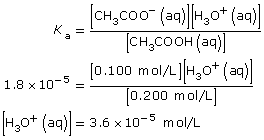
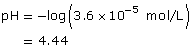

Module 8—Acid-Base Equilibrium
 Self-Check
Self-Check
How can your knowledge of the equilibrium constant be used to estimate the pH of a buffer solution? Considering that the chemical components in a buffer include a weak acid and its conjugate base and water, would it be possible to determine the pH of a buffer?
SC 2. Use the following information to calculate the pH of a buffer composed of the following two solutions: 0.200 mol/L ethanoic acid and 0.100 mol/L sodium ethanoate.
Self-Check Answers
Contact your teacher if your answers vary significantly from the answers provided here.
SC 2.


 Module 8: Lesson 7 Assignment
Module 8: Lesson 7 Assignment
Retrieve your copy of the Module 8: Lesson 7 Assignment that you saved to your computer earlier in this lesson. Complete the Assignment. Save your work in your course folder and submit a copy to your teacher.
 Reflect on the Big Picture
Reflect on the Big Picture
Acid deposition is a constant stress on soil. Sometimes the quantity of acids deposited overwhelms the buffering capacity of soil, and the soil pH rapidly drops.
Use the Internet to research the effect of loss of buffering capacity in soil on agricultural productivity. What strategies are used to restore the buffering capacity of soil? Do these strategies make sense in light of what you have learned in Module 8?
Save a copy of your research and your response in your course folder.